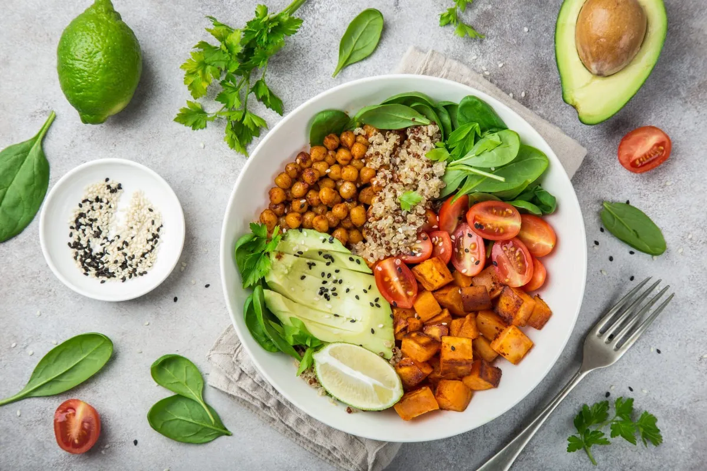

We’ve put together some nutritional information and some examples of foods to eat on your 4-week bulking diet, to help aid your bulking transformation and build a bigger body:

Packing on lean muscle is tough for even the most seasoned athlete. Not only does your training have to be strict and well-structured around hypertrophy, your diet also needs to support your body as it grows.
To help themselves grow, most bodybuilders will perform a bulking and cutting cycle. The bulking stage focuses on packing on as much mass as possible. Time frames vary, but the plan below is for a four-week bulk – perfect for adding extra mass before a holiday.
However, to pack on size you need to be eating healthy food, and a lot of it. To help, use an online calorie calculator to work out what your calorie ‘maintenance’ is – which is the calorie intake you need to eat each day to maintain your weight. This will vary based on your height, weight, age and activity status. Typically, the guidelines state 2500 calories for men and 2000 calories for women. But in addition, you’ll need to add extra calories to ensure that you are feeding the growth. You should start with a surplus of +20%, (approximately 500 calories).
When you’re eating a surplus, your body will be able to use the extra energy (carbohydrate, protein and fat) to train harder and build muscle. An increase in calories goes hand-in-hand with an increase in muscle mass – but only if you eat the right food, i.e. packing in the protein.
We’ve put together some nutritional information and some examples of foods to eat on your 4-week bulking diet, to help aid your bulking transformation and build a bigger body:
When you’re bulking, you’ll need to keep yourself well hydrated. 1.5 – 2 litres per day or 6-8 glasses of water. To increase your caloric intake, you could also drink milk for additional protein – a perfect evening drink before bed to keep that protein synthesis in the black. You could consider a product such as Micellar Casein, for a tasty slow releasing protein powder. Fruit juices can add extra sugar which can be useful post-workout, but limit this to once or twice per week.
Unlike a cut, where you need to cut down on carbohydrates, those on a bulk can and should enjoy plenty of carbs. Hence, the harder you can train, the more likely you are to build mass. Stick to wholegrains as opposed to processed refined carbs which quickly spike blood sugar and can be stored as fat.
Protein is the key nutrient when it comes to bulking transformations, as it’s the nutrient responsible for supporting lean muscle development. On a bulk, every meal should contain protein and you should aim for 2g per kg of bodyweight per day.
Your bulking transformation depends on two things: eating at a calculated calorie surplus and eating healthy food. A ‘dirty bulk’ will add too much body fat and leave you feeling bloated.
Instead, aim to consume around 6 meals a day that pack in plenty of calories. We’ve provided plenty of options for each meal below, so mix and match to build yourself a diet that’ll help you quickly gain lean mass.
Add veggies such as tomatoes, celery and broccoli, to whichever meal you like.
Breakfast options – select one from the following list each day.
Morning meal/snack options – combine these to increase calories if needed
Dinner options